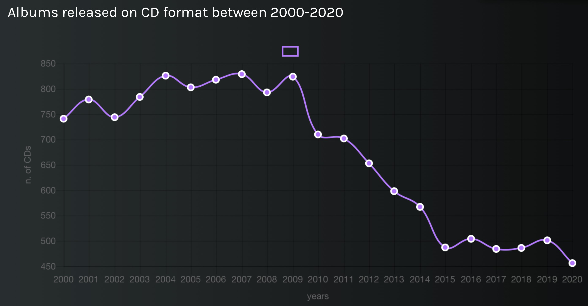
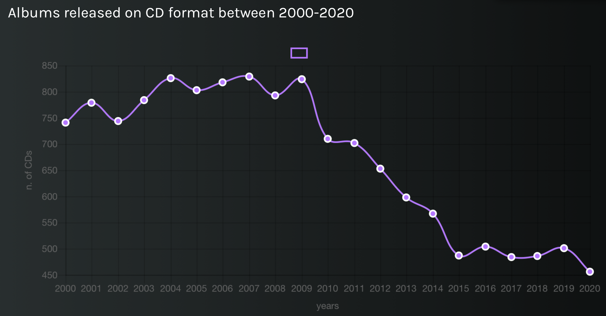
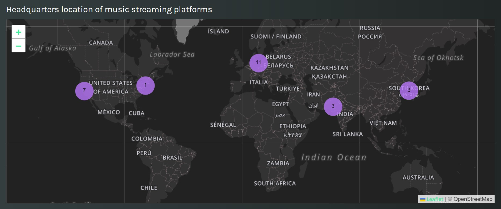

It goes without saying that, nowadays, the music industry is vibrant and dynamic unlike ever before. As new technologies and distribution platforms emerge, the music industry must change alongside them, adapting to and keeping up with the latest trends. Think about streaming concerts – something unimaginable only ten years ago that is now, however, the norm after the coronavirus pandemic – or about the impact of TikTok, a true hit-making machine. As girls born in 1999 – the year of the launching of the first music streaming platform – we both have first-hand experience of the paramount changes undergone by the music industry: we grew up listening to cassette tapes and CDs, during our teenage years we owned MP3 players, and nowadays we are Spotify users. Our data story stems precisely from our curiosity about distribution formats of albums released between 2000-2020, and from our desire to investigate the matter from a statistical point of view, in light also of the general renewed interest in vinyl.
According to Wikidata, a total amount of around 144,500 albums have been released over the last two decades, but our data sample is considerably smaller: it comprises approximately 35,000 albums, of which 40% have been released on CD, 34% on a streaming platform, and 4% on vinyl. This should come as no surprise. Cast your mind back to the early 2000s, a time dominated by CDs – the primary medium through which music enthusiasts as well as casual listeners could enjoy music. Now, fast forward to today, and you will notice a fascinating shift in trends: streaming has replaced physical formats, marking the downfall of CDs. The fact that I am currently writing on a laptop with no CD player is a testament to that. Simply put, in this day and age, CDs seem to be anachronistic, a thing of the past that – having outgrown its usefulness – no longer has a place in our modern world. In light of all this, one may be inclined to say that, nowadays, digital is rising and physical is dying. Not exactly: in recent years, vinyl records have made an extraordinary comeback, capturing once again the hearts of many. Check the line charts below to learn more about the matter.
 We proceed on our inquiry, by delving into the dynamic world of music streaming platforms. Have you ever wondered how this new way of consuming music has emerged and spread across the globe, managing to dethrone the once much-beloved CDs? Through the analysis of the currently existing streaming platforms, their launching date and whereabouts, we gain remarkable insight into the nature of the revolutionary phenomenon that is the music streaming industry.
Our virtual journey is finally coming to an end, and now it is your turn to embark on your own interactive adventure. Are you ready? Imagine being able to uncover valuable information about your favourite albums – and all this with just a few clicks. Our text search feature allows you to do precisely that. By typing any album title, a wealth of information is revealed to you: from the artist behind it to the release date, from the genre to the available distribution formats. Check our data story on Melody and let us guide you through the ever-changing landscape of the music industry, its major distribution formats, and much more!
